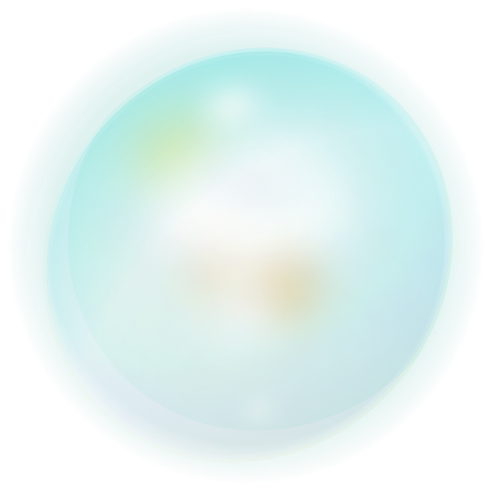

พื้นที่ทิ้งความกังวล
มีเรื่องอะไรให้คิดมาก พิมพ์ทิ้งไว้ได้เลยนะ เดี๋ยว Mooca จัดการให้เอง
ไม่มีการบันทึกข้อความนี้ไว้ที่ไหน
{{ countLabel }}

มีเรื่องอะไรให้คิดมาก พิมพ์ทิ้งไว้ได้เลยนะ เดี๋ยว Mooca จัดการให้เอง
ปล่อยมันไปนะ...
ปล่อยมันไปนะ...
บางครั้งการได้ระบายออกมาก็ช่วยให้ใจเบาลงได้นะ พักสายตาสักนิด แล้วค่อยไปต่อกัน
ตัวอย่างลิงก์ — เวอร์ชันจริงจะพาไปหน้านักฟังของ Ooca